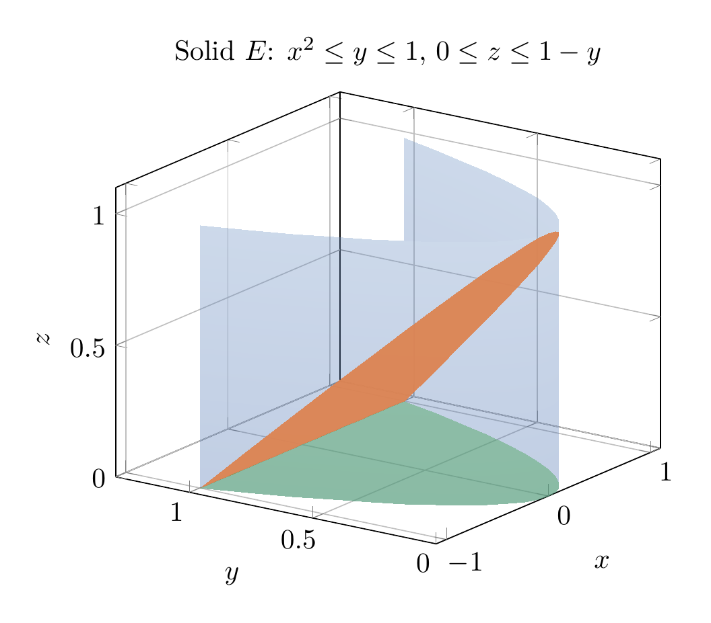
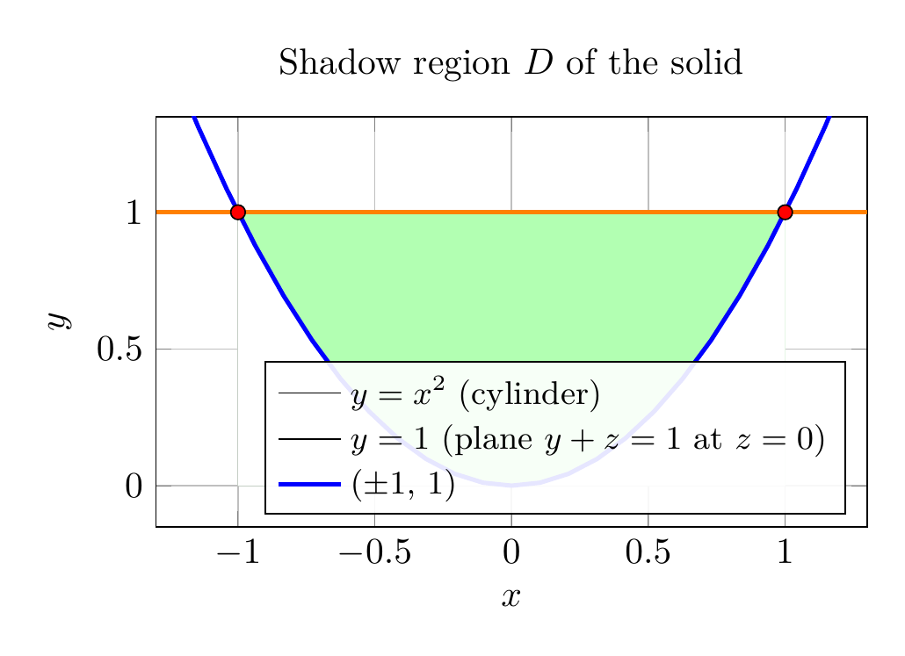

Please solve the problem in the following image.
(Image `20260928_233320_804417_utc_0800_0.png`. Alt text: Image: human_20260928_233320_804417_utc_0800)
20260928_233320_804417_utc_0800_0.png
End of problem
Answer
# Setting Up the Integrals (Stewart 15.7, Ex. 47)
**Given:** the solid $E$ enclosed by the cylinder $y=x^2$ and the planes $z=0$ and $y+z=1$, with density $\rho(x,y,z)=\sqrt{x^2+y^2}$.
## Step 1 — Describe the solid $E$ (find the bounds)
The bottom of the solid is the plane $z=0$; the top is the plane $z=1-y$ (from $y+z=1$). Since we need $0\le z\le 1-y$, the "shadow" $D$ of $E$ in the $xy$-plane is where $1-y\ge 0$, bounded on the sides by the cylinder $y=x^2$.
The cylinder meets the plane at $z=0$ when $x^2=y=1$, i.e. at the points $(\pm 1, 1, 0)$. Hence
$$
E=\bigl\{(x,y,z)\;:\; -1\le x\le 1,\;\; x^2\le y\le 1,\;\; 0\le z\le 1-y\bigr\}.
$$
The 3D figure below shows the solid: the blue parabolic cylinder wall $y=x^2$, the orange top $z=1-y$, and the green bottom $z=0$ over the shadow $D$.
## Step 2 — Shadow region $D$ (an intermediate 2D picture)
The shadow of the solid in the $xy$-plane is the region $x^2\le y\le 1$ between the parabola and the line $y=1$; this determines the $x$ and $y$ bounds of every integral below.
## Step 3 — (a) Mass
$$
m=\iiint_E \rho\,dV
=\int_{-1}^{1}\int_{x^2}^{1}\int_{0}^{1-y}\sqrt{x^2+y^2}\; dz\,dy\,dx.
$$
## Step 4 — (b) Center of mass $(\bar x,\bar y,\bar z)$
By symmetry about the plane $x=0$ (both $E$ and $\rho$ are even in $x$), $\bar x=0$. In general,
$$
\bar x=\frac{1}{m}\iiint_E x\rho\,dV
=\frac{1}{m}\int_{-1}^{1}\int_{x^2}^{1}\int_{0}^{1-y}x\sqrt{x^2+y^2}\; dz\,dy\,dx,
$$
$$
\bar y=\frac{1}{m}\iiint_E y\rho\,dV
=\frac{1}{m}\int_{-1}^{1}\int_{x^2}^{1}\int_{0}^{1-y}y\sqrt{x^2+y^2}\; dz\,dy\,dx,
$$
$$
\bar z=\frac{1}{m}\iiint_E z\rho\,dV
=\frac{1}{m}\int_{-1}^{1}\int_{x^2}^{1}\int_{0}^{1-y}z\sqrt{x^2+y^2}\; dz\,dy\,dx,
$$
with $m$ the mass integral from part (a). (A numerical check gives $\bar x\approx 0$, $\bar y\approx 0.53$, $\bar z\approx 0.23$.)
## Step 5 — (c) Moment of inertia about the $z$-axis
The distance to the $z$-axis is $\sqrt{x^2+y^2}$, so the integrand is $\rho\,(x^2+y^2)$:
$$
I_z=\iiint_E (x^2+y^2)\,\rho\,dV
=\int_{-1}^{1}\int_{x^2}^{1}\int_{0}^{1-y}(x^2+y^2)\sqrt{x^2+y^2}\; dz\,dy\,dx.
$$
These are the required setups (no evaluation needed).
---
\documentclass[border=10pt]{standalone}
\usepackage{pgfplots}
\pgfplotsset{compat=1.18}
\begin{document}
\begin{tikzpicture}
\begin{axis}[
view={-55}{22},
xlabel={$x$}, ylabel={$y$}, zlabel={$z$},
xmin=-1.1, xmax=1.1, ymin=0, ymax=1.3, zmin=0, zmax=1.1,
title={Solid $E$: $x^2\le y\le 1$, $0\le z\le 1-y$},
grid, z buffer=sort]
% wall: parabolic cylinder y = x^2 (semi-transparent)
\addplot3[surf, shader=interp, opacity=0.35, draw=black!30,
colormap={blu}{rgb255=(76,114,176) rgb255=(110,145,195)},
domain=-1:1, y domain=0:1, samples=25, samples y=12]
({x}, {x^2}, {y});
% top: z = 1 - y over shadow D
\addplot3[surf, shader=interp, opacity=0.95, draw=black!30,
colormap={org}{rgb255=(221,132,82) rgb255=(221,132,82)},
domain=-1:1, y domain=0:1, samples=25, samples y=15]
({x}, {x^2 + y*(1-x^2)}, {1 - x^2 - y*(1-x^2)});
% bottom: z = 0 over shadow D
\addplot3[surf, shader=interp, opacity=0.5, draw=black!30,
colormap={grn}{rgb255=(85,168,104) rgb255=(85,168,104)},
domain=-1:1, y domain=0:1, samples=25, samples y=15]
({x}, {x^2 + y*(1-x^2)}, {0});
\end{axis}
\end{tikzpicture}
\end{document}

pgfplots_0.png
---
**Reading the bounds off the figure (Step 1):** for a fixed $x\in[-1,1]$, $y$ runs from the cylinder $y=x^2$ up to $y=1$ (where the top plane hits the bottom plane); for each such $(x,y)$, $z$ runs from $0$ to $1-y$. This vertical-slice structure is exactly what the triple integrals encode.
---
\documentclass[border=10pt]{standalone}
\usepackage{pgfplots}
\pgfplotsset{compat=1.18}
\begin{document}
\begin{tikzpicture}
\begin{axis}[
xlabel={$x$}, ylabel={$y$},
xmin=-1.3, xmax=1.3, ymin=-0.15, ymax=1.35,
title={Shadow region $D$ of the solid},
axis equal image, grid,
legend pos=south east, legend cell align=left,
legend style={font=\small, fill=white, fill opacity=0.9, text opacity=1}]
% shaded shadow region between y=x^2 and y=1
\addplot[fill=green!30, draw=none, domain=-1:1] {1} \closedcycle;
\addplot[fill=white, draw=none, domain=-1:1] {x^2} \closedcycle;
% cylinder y = x^2
\addplot[blue, very thick, domain=-1.25:1.25] {x^2};
\addlegendentry{$y=x^2$ (cylinder)}
% line y = 1
\addplot[orange, very thick, domain=-1.3:1.3] {1};
\addlegendentry{$y=1$ (plane $y+z=1$ at $z=0$)}
% intersection points
\addplot[only marks, mark=*, mark options={fill=red, draw=black}] coordinates {(-1,1) (1,1)};
\addlegendentry{$(\pm 1,\,1)$}
\end{axis}
\end{tikzpicture}
\end{document}

pgfplots_1.png
---
**Final answers** (set up, not evaluated):
**(a) Mass**
$$
m=\int_{-1}^{1}\int_{x^2}^{1}\int_{0}^{1-y}\sqrt{x^2+y^2}\; dz\,dy\,dx
$$
**(b) Center of mass**
$$
\bar x=\frac{1}{m}\int_{-1}^{1}\int_{x^2}^{1}\int_{0}^{1-y}x\sqrt{x^2+y^2}\; dz\,dy\,dx,\qquad
\bar y=\frac{1}{m}\int_{-1}^{1}\int_{x^2}^{1}\int_{0}^{1-y}y\sqrt{x^2+y^2}\; dz\,dy\,dx,\qquad
\bar z=\frac{1}{m}\int_{-1}^{1}\int_{x^2}^{1}\int_{0}^{1-y}z\sqrt{x^2+y^2}\; dz\,dy\,dx
$$
**(c) Moment of inertia about the $z$-axis**
$$
\boxed{\;I_z=\int_{-1}^{1}\int_{x^2}^{1}\int_{0}^{1-y}(x^2+y^2)^{3/2}\; dz\,dy\,dx\;}
$$
where $(x^2+y^2)\rho=(x^2+y^2)\sqrt{x^2+y^2}=(x^2+y^2)^{3/2}$, and the mass $m$ in (b) is the integral from (a).